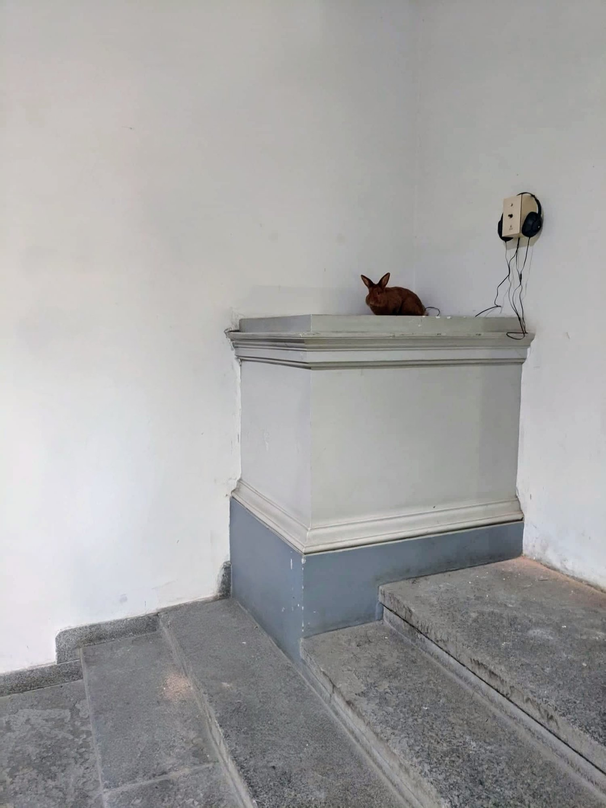

1 / 2
▓ Complication |

|
Exhibition History |
|
Dec 2018-Jan 2019: Solo Exhibition "Complication" Output Gallery, Prague, Czech Republic ↗ |
Curatorial text by Jonáš Richter |
|
In his audio-essey, Dedek draws on the experience of a player who after many years returns back to a once-played and familiar game and who is experiencing some complications as is the case with similar returns. First of all there is the specific time mode of the game: the game itself is an eternal return – its beginnings and ends are only seeming, like the beginning and end of a circle. By playing, the player gradually improves on skills, but not because he remembers specific solutions, but rather improves in instincts of a kind – the player's mind is similar to the animal. The game has no solution or has infinitely many, similar to human or animal life. Returning to such a moment is searching for lost time. The game is always present – a return to it is a return to the present. It can't offer us anything we've already experienced. It is always new / changing because we are always changing and we are one of many variables. It is the reduction of similar returns to the audio recording of aimless wandering around the bounded territory of the computer game map, which activates hearing in its primary function by evaluating the dangers and the spatio-temporal situation. By a player the familiar sounds trigger the aforementioned „animal instincts" and he / she reacts to them rather unconsciously. The viewer / listener, who does not know the game environment, tries to at least partially orientate himself / herself in the environment from the auditory perceptions and at the same time the commentary makes him think about how his own attempts at return in time are accompanied by similar complications.
|
About the project |
|
On the example of a player who after many years returns back to a once-played and familiar game, this audio essay deals with the possibility of return in general and the complications that arise in such an attempt. The audio track consists of voice-over, 3D game environment sounds and its 'occupants'.
|
Documentation |
|
Photo of the minimal gallery setting with the famous rabbit Jindřich ⤵
|
|  |
Related Projects |
| Place of Family 2019 |
| Make Your Dreams Come Backyard 2020 |
| Changeling 2024 |